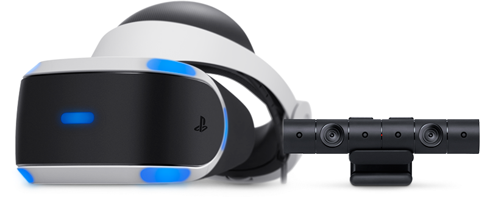

|
Il PlayStation VR, é un visore di realtà virtuale sviluppato da Sony eprogettato per essere compatibile con la PlayStation 4. Il Sony Playstation VR è equipaggiato con un unico schermo OLED da 1080p, con una dimensione di 5,7 pollici. La risoluzione totaleé di 1080×720p che corrisponde a 960 x 1.080 per occhio e garantisce un campo visivo di circa 100°.Playstation VR funziona solamente in combinazione con Playstation Camera. Sono inoltre consigliati anche altri accessori utili per aumentare il realismo e l'interazione nell'ambiente di realtà virtuale. Gli accessori compatibili sono i controllers Playstation Move e le cuffie Playstation Rig 4VR. |
|
|  |
Con doppie lenti e sensori di profondità 3D, PlayStation Camera rileva la posizione del visore, del controller di movimento PlayStation Move e della barra luminosa del controller DUALSHOCK 4 ovunque ti trovi, per essere sempre al centro del tuo universo di gioco VR.I nove LED posizionati sulla parte anteriore, su quella posteriore e ai lati del visore PS VR sono rilevati da PlayStation Camera per garantirti la massima precisione all'interno dell'universo di gioco, a prescindere dalla tua posizione nella stanza. |